8.8%
Posesión Azul
44.8%
Posesión Rojo
46.4%
Sin posesión
10.2 m
Distancia del balón
20.69
Vel. máx balón (km/h)
4
Robots
12
Pases
14
Intercepciones
17
Tiros a gol
43
Eventos totales
Partido analizado
Vista cenital (homografía)
Posesión por equipo
Distancia por robot (m)
Velocidad máxima por robot (km/h)
Cronología de eventos
| Tiempo | Tipo | Equipo | Robots |
|---|---|---|---|
| 0.17s | intercepcion | Azul | #3→#1 |
| 0.47s | intercepcion | Rojo | #1→#3 |
| 0.47s | tiro_a_gol | Rojo | #3→#– |
| 0.6s | intercepcion | Azul | #3→#2 |
| 4.23s | tiro_a_gol | Azul | #1→#– |
| 4.3s | intercepcion | Rojo | #1→#3 |
| 6.9s | tiro_a_gol | Rojo | #3→#– |
| 8.77s | tiro_a_gol | Rojo | #3→#– |
| 12.67s | tiro_a_gol | Rojo | #3→#– |
| 17.4s | tiro_a_gol | Rojo | #3→#– |
| 36.33s | tiro_a_gol | Rojo | #3→#– |
| 36.37s | pase | Rojo | #3→#4 |
| 36.67s | intercepcion | Azul | #4→#1 |
| 36.77s | intercepcion | Rojo | #1→#4 |
| 36.8s | intercepcion | Azul | #4→#1 |
| 37.6s | intercepcion | Rojo | #1→#4 |
| 37.93s | tiro_a_gol | Rojo | #4→#– |
| 38.4s | pase | Rojo | #4→#3 |
| 38.43s | pase | Rojo | #3→#4 |
| 38.63s | pase | Rojo | #4→#3 |
| 38.67s | pase | Rojo | #3→#4 |
| 42.9s | tiro_a_gol | Rojo | #4→#– |
| 42.97s | pase | Rojo | #4→#3 |
| 44.57s | pase | Rojo | #3→#4 |
| 44.77s | pase | Rojo | #4→#3 |
| 44.8s | pase | Rojo | #3→#4 |
| 44.83s | pase | Rojo | #4→#3 |
| 44.9s | pase | Rojo | #3→#4 |
| 44.93s | pase | Rojo | #4→#3 |
| 51.6s | tiro_a_gol | Rojo | #3→#– |
| 56.37s | tiro_a_gol | Rojo | #3→#– |
| 56.9s | intercepcion | Azul | #3→#1 |
| 58.67s | tiro_a_gol | Azul | #1→#– |
| 61.43s | tiro_a_gol | Azul | #1→#– |
| 62.33s | intercepcion | Rojo | #1→#3 |
| 66.47s | tiro_a_gol | Rojo | #3→#– |
| 66.83s | intercepcion | Azul | #3→#1 |
| 68.27s | intercepcion | Rojo | #1→#3 |
| 75.77s | tiro_a_gol | Rojo | #3→#– |
| 92.8s | tiro_a_gol | Rojo | #3→#– |
| 98.5s | intercepcion | Azul | #3→#1 |
| 101.47s | tiro_a_gol | Azul | #1→#– |
| 104.23s | intercepcion | Rojo | #1→#3 |
Red de pases (robot → robot)
| Origen | Destino | Pases |
|---|---|---|
| #3 | #4 | 6 |
| #4 | #3 | 6 |
Mapas de calor
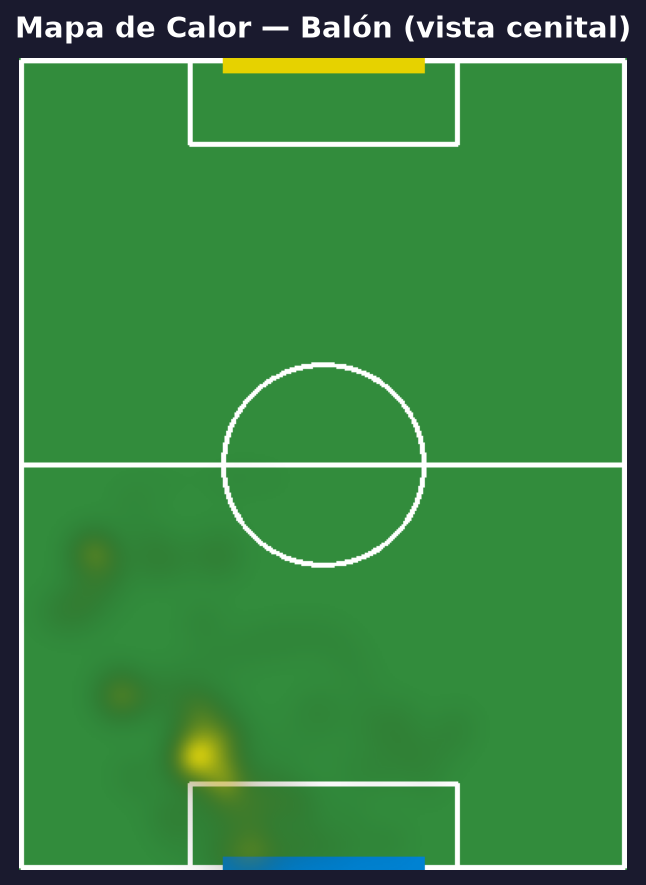
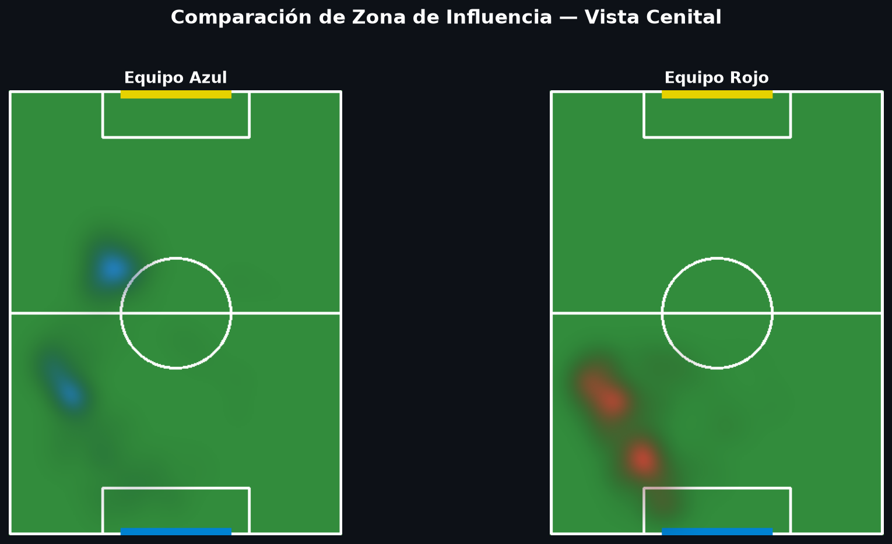
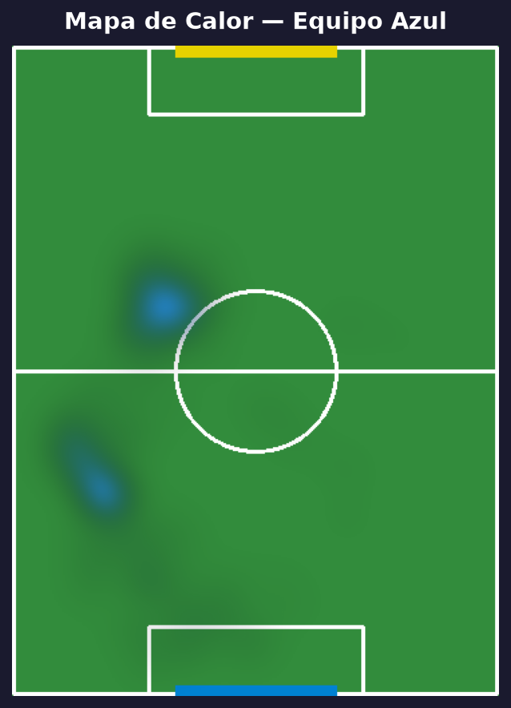
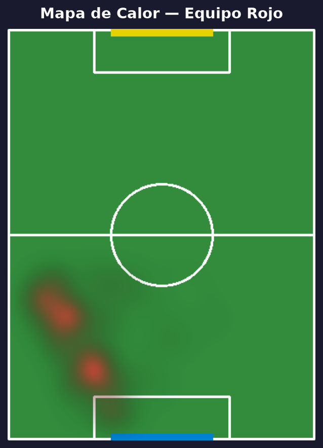
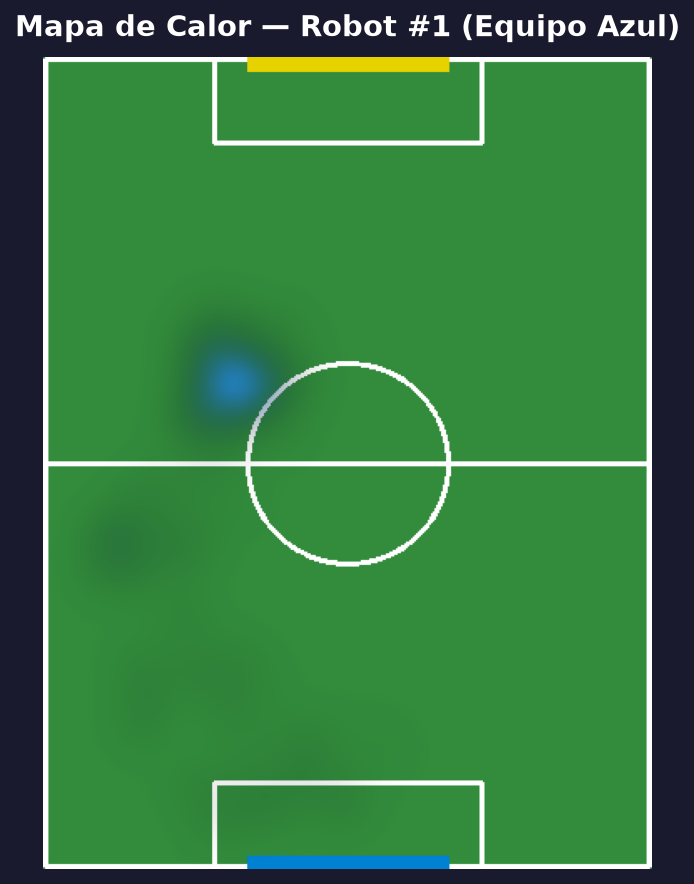
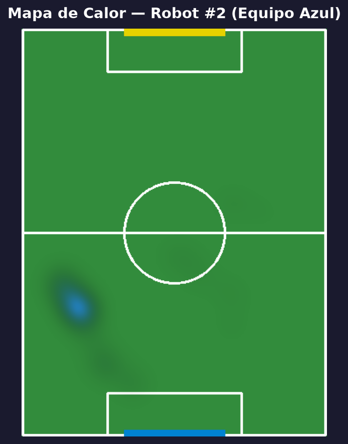
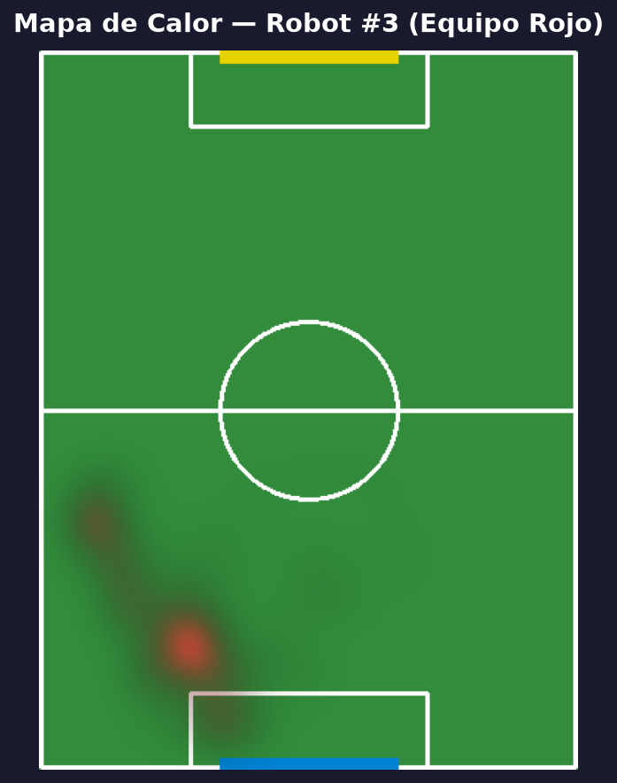
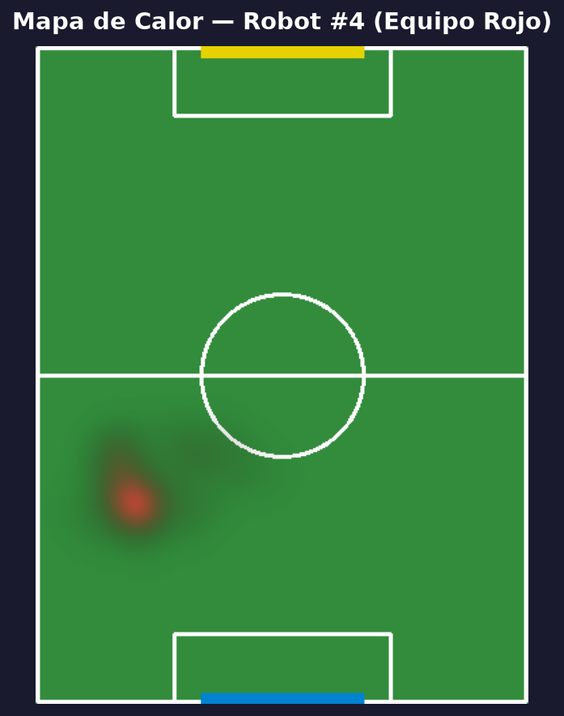
Visualizaciones avanzadas
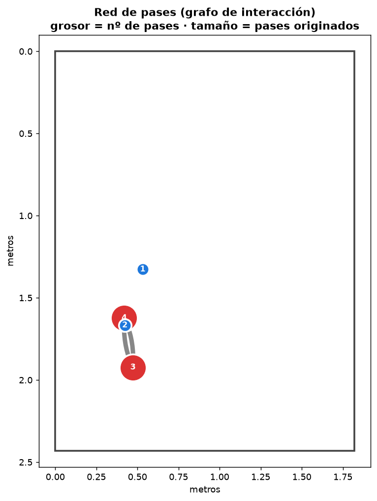
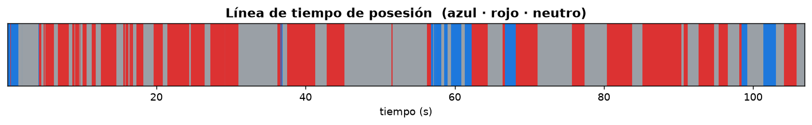
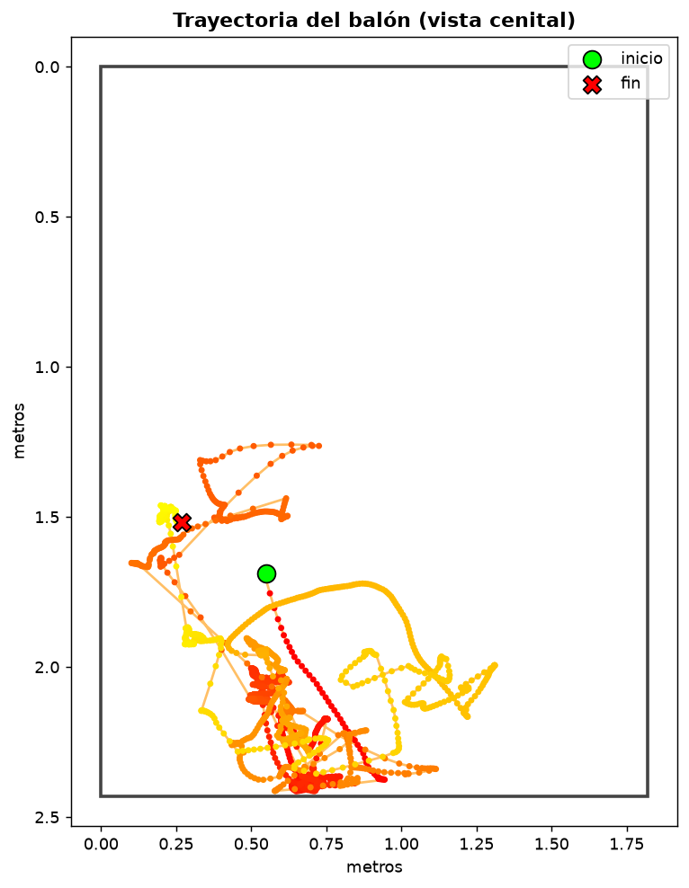
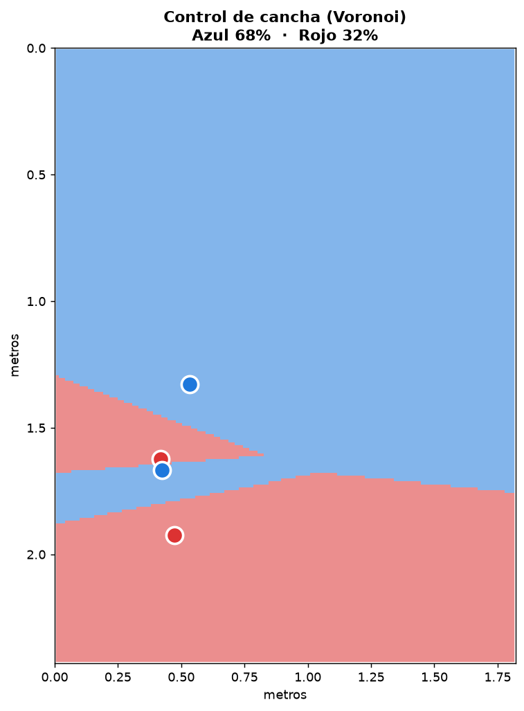